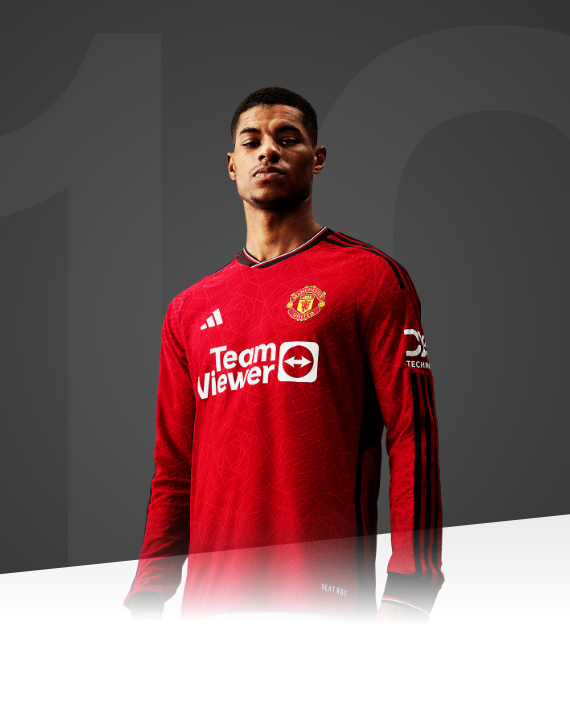

I have always been a United fan, so to be playing in the first team really is a dream come true.

AGE
25
APPEARANCES
369
CLEAN SHEETS
124
BIOGRAPHY
Marcus Rashford was thrust into the senior spotlight in February 2016 - with spectacular results - and has not looked back since.
The homegrown youth product has already come such a long way in a short time and having the happy knack of scoring on his debuts has helped. He netted twice against Midtjylland when thrust into the spotlight in a Europa League tie and followed it up with a brace against Arsenal on his Premier League bow.
The fleet-footed forward found the net on his first England appearance, within a couple of minutes of the 2-1 win over Australia at Sunderland's Stadium of Light to become the youngest man to score on his Three Lions debut, beating Tommy Lawton's 1938 record.
A famous derby winner at Manchester City and crucial FA Cup replay goal on the way to winning the trophy under Louis van Gaal continued his sharp upward trajectory, which continued with representing his country at Euro 2016. A new contract until 2020, with the option of a further year, was just reward for his meteoric rise to stardom.
After being involved in 53 games in all competitions in the following season, getting off the mark when coming off the bench to hit an injury-time winner at Hull City early in the campaign, it was obvious he was no flash in the pan. Indeed, Jose Mourinho continued to show faith in the youngster as he was constantly involved and bagged a memorable double in a 2-1 home victory against Liverpool in 2018.
Becoming ever more important for club and country, he nervelessly fired home a penalty in the dramatic shoot-out win over Colombia at the World Cup finals and would later show similar steel to power the injury-time spot-kick past Gianluigi Buffon to knock Paris Saint-Germain out of the 2018/19 Champions League at the Parc des Princes.
Such mental fortitude has quickly become part of Rashford's make-up as he has shouldered a lot of responsibility in attack and ran tirelessly in games, defending from the front and displaying great energy. Ole Gunnar Solskjaer appears to relish helping to mentor the striker and is working on honing his finishing prowess as the Academy product develops his game even further.
Following Romelu Lukaku's departure to Inter Milan, it was suggested he would need to improve his goal output and he delivered in the opening game of the 2019/20 season with a brace in the 4-0 defeat of Chelsea, maintaining his good record against other top-six sides. A landmark 50th strike for the Reds came in October, when he atoned for having a penalty saved by Tim Krul when expertly finishing Daniel James's through ball.
The goals continued to flow for the homegrown product as he scooped the club's Player-of-the-Month award for November and December, and also the overall PFA Premier League prize for the last month of 2019. He marked his 200th appearance for the club with a double in a 4-0 victory over Norwich City in January.
A stress fracture to his back ruled him out of action prior to the suspension of football during the COVID-19 pandemic, but Rashford used his time out to campaign against homelessness and child hunger in the United Kingdom - work for which he would go on to receive an MBE.
While receiving wider acclaim for his actions off the pitch, Marcus continued to impress on it, scoring his first United hat-trick against RB Leipzig in the Champions League on the way to registering 21 goals in all competitions in 2020/21 - just one fewer than in the previous season.
He captained the England senior side for the first time in a friendly with Romania before Euro 2020, scoring a penalty which brought him to 100 goals for club and country, at the still tender age of 23.
Following the Euros, Rashford had surgery on an ongoing shoulder issue, which ruled the winger out for the beginning of the 2021/22 season. The attacker missed the first seven Premier League matches and returned to action with a goal off the bench away to Leicester in October 2021.
Despite not hitting the heights of his previous seasons Rashford was regularly utilised by Ole Gunnar Solskjaer and then by interim manager Ralf Rangnick, making 32 appearances in total across the season. The winger scored in consecutive matches off the bench against Brentford and West Ham in February, but starts became more sporadic for the England international as the season drew to a close.
The 2022/23 campaign was the most prolific of Rashford's career to date, as the England international hit 30 goals across all competitions for the Reds - the first time a United player had done so since Robin van Persie in 2013. Rashford's form was rewarded with United's Sir Matt Busby Player of the Year award, while he was also named Players' Player of the Year by his team-mates.
Rashford scored in our Carabao Cup final triumph in February 2022, as the Reds won 2-0 against Newcastle to claim United's first trophy since 2017. He also notched three times for England during the winter World Cup in Qatar.